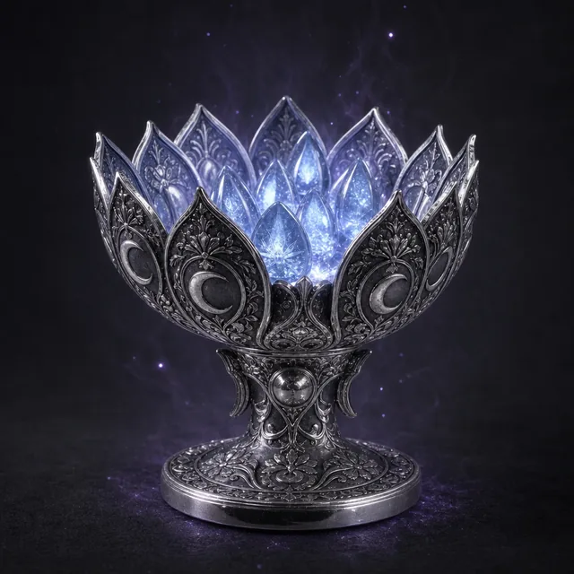

Предмет · undefined · №6
Стоимость Призыва: 3 После полнолуния поместите 6 жетонов на эту карту как слёзы богини. Они обновляются только после света следующего полнолуния. Выберите существо в пределах Близкой дистанции и совершите Бросок Заклинания (15); при успехе вы можете потратить эти жетоны следующим образом: - 2 жетона: Цель очищает 2 Раны или Стресс. - 4 жетона: Цель очищает все Раны или весь Стресс (выберите одно). - 6 жетонов: Вы можете отметить 3 Стресса, чтобы исцелить цель от любого недуга или проклятия, или очистить все её Раны и Стресс. - 6 жетонов и 6 Надежды: Вы можете воскресить цель. Цель навсегда вычёркивает Ячейку Стресса и получает Шрам. Артефакт уничтожается.
Открыть в генераторе лута